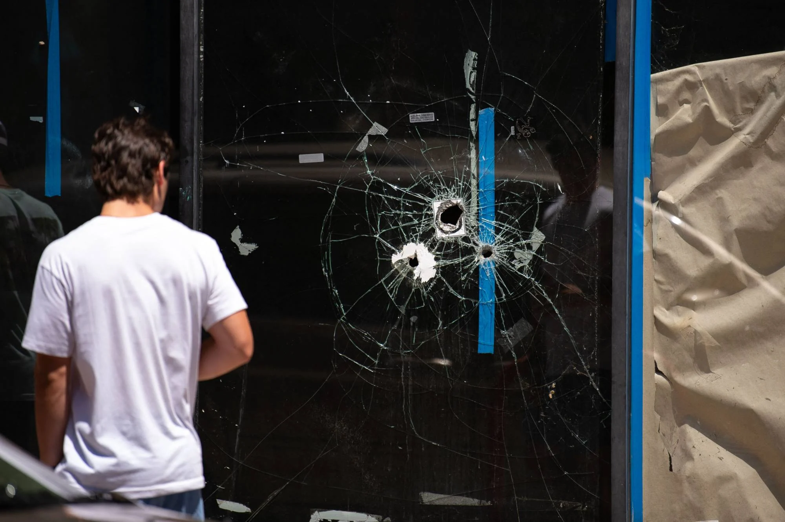

Eight dead, dozens wounded in weekend US mass shootings
Category: Social News, United States & Canada, Gun Violence, Crime
Originally published on 06 Jun 2022. Most recent update: 06 Jun 2022.

A Philadelphia firefighter washes blood off the road at the scene of a fatal shooting in Philadelphia on Sunday. Photo: AP
Shootings in three American cities killed nine people and wounded two dozen more on Saturday night and Sunday morning, the latest outbreaks of gun violence in the wake of three mass shootings that have rattled the United States.
In Philadelphia, a confrontation between two men escalated into a gunfight that sprayed bullets into a crowded bar and restaurant district, killing three people, wounding 12, and setting off panic as people tried to flee, police said.
Similarly, shooting broke out after midnight near a bar in Chattanooga, Tennessee, after midnight on Saturday, killing three and wounding 14, according to police.
In yet another shooting in the early hours of Sunday, three people were killed and two were wounded in Saginaw, Michigan, WEYI television reported, citing a police statement. Unlike the other two cases, which affected bystanders unconnected to the shooting, all five of the people in the Michigan shooting were involved in the incident, police said.
No suspects were reported in custody as of Sunday evening in any of the shootings.
The violence struck as communities in three other cities are still grieving from massacres that killed 10 people at a grocery store in Buffalo, New York; 21 victims at a junior school in Uvalde, Texas; and four people at a medical building in Tulsa, Oklahoma.
In Uvalde, they buried 10-year-old Alithia Haven Ramirez on Sunday. She was one of the 19 schoolchildren killed in the rampage by an 18-year-old man armed with an AR-15 semi-automatic rifle.
Alithia dreamed of attending art school in Paris and loved to play soccer, according to an obituary posted by a funeral home.
Gun safety advocates are pushing the US government to take stronger measures to curb gun violence.
There have been at least 240 mass shootings in the United States so far this year, according to the Gun Violence Archive, a non-profit research group. It defines a mass shooting as one in which at least four people are shot, excluding the shooter.
US President Joe Biden on Thursday called on Congress to ban assault weapons, expand background checks and implement other gun control measures to address the string of mass shootings.
Chris Murphy, the lead Democratic US senator working on bipartisan gun safety talks, said on Sunday he thinks a package including investments in mental health and school safety and some changes to gun laws can pass Congress.
The brazen nature of the Philadelphia shooting left officials aghast. Philadelphia Mayor Jim Kenney called it “horrendous, despicable and senseless,” while Police Commissioner Danielle Outlaw said: “We’re absolutely devastated”.

The aftermath of a shooting in Philadelphia, Pennsylvania. Photo: AFP
Police believe two men got into a fight and began shooting at each other, and one of them was killed by gunfire. A police officer observed the other shooter firing into the crowd and fired at him.
The shooter dropped his gun, as police believe he was struck by the officer, but he escaped through the crowd.
The dead were aged 22, 27 and 34 while the ages of the people wounded ranged from 17 to 69.
In Chattanooga, three people were dead and 14 wounded by multiple shooters, authorities said. Two died of gunshot wounds and a third died after being struck by a vehicle while fleeing.
Chattanooga Police Chief Celeste Murphy appealed for the public’s help, asking any witnesses to call a tip line.
In Michigan, Saginaw police reported they were called to a scene where two men were pronounced dead and one woman was transported to hospital where she died of her wounds.
Two other men were being treated for gunshot wounds.